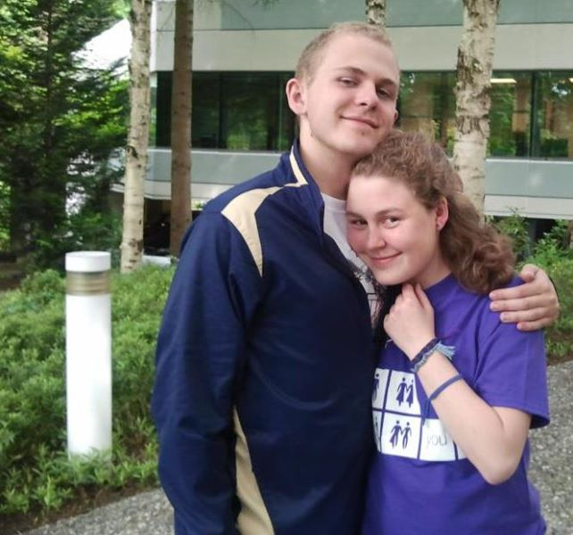

Overview
Welcome to my blog! I'm a fifth year computer science engineering and statistics undergraduate at UC Davis and this is my personal page to help keep track of everything I've got going on. This website is constantly under flux, so if you have any questions, comment below or shoot me an email at ryschaeffer@ucdavis.edu!
After reading John Owens's advice on having a webpage, I decided to add a picture so that people will know what I look like. This is me visiting my older sister at Microsoft:

I try to keep my profile up to date, but we all know how that goes.
Bitcoin and Cryptocurrency Technologies
I received approval from the Computer Science Undergraduate Affairs group to teach my third class, Bitcoin and Cryptocurrency Technologies, in Spring 2016. I am co-teaching with Vincent Yang. The term project outline can be viewed here here.
History of Computer Science
The second course I taught was a 1-unit seminar Spring 2015 on the History of Computer Science. In case you're interested in learning more about it, here is the updated syllabus. I want to thank Sean Davis for serving as my instructor of record, as well as Nina Amenta, Phillip Rogaway, Matthew Farrens, Norm Matloff, Vladimir Filkov, Patrice Koehl and Lori Avellar for making the seminar possible.
Out of the 15 students in the class, 11 submitted course evaluations and 9 submitted the extended course evaluation. You can read their responses here. Note: the evaluations were handwritten, so I had to digitize the students' responses myself. Some handwriting was illegible, so some information was lost.
Davis Hacks: Thinking Strategically About Undergraduate Success
The first course I taught was a seminar for University Honors Program students on how to maximize one's undergraduate educational experience. I co-taught with with Patrick Sheehan. The course was based on a course we both took taught by Rajiv Narayan. I may post the material at some later date, but for those interested in the key lessons, read Cal Newport's Blog.
Advice to UC Davis CS Undergrads
Posts
- "The End of Crypto"
- Andrew Narayanan and Ending the Online Panopticon
- Why I Reconstructed My Facebook
- Oh, The Places You'll Go
- Alexander Coward
- October 10th, 2015
- October 5th, 2015
- Nicholas Carr's The Shallows
- March 10th, 2015
- March 5th, 2015
- February 28th, 2015
- February 21st, 2015
- February 19th, 2015
- February 17th, 2015
- February 13th, 2015
- February 12th, 2015
- February 11th, 2015
- February 10th, 2015
- Welcome to my blog!
In the Media
- Hmm, No: Rethinking Academic Constraints at UC Davis
- Interview with UC Davis News prior to my TEDxUCDavis Speech
- UC Davis Students Continue Push For More Undergraduate-Led Courses
- ASUCD Senate Found Guilty of Inequitable Financial Treatment
- Current, Former ASUCD Officials Weight In On Lack of Student Involvement
- Guest Opinion: Response to Editorial "ASUCD Holds Uncontested Election"
- Response to "The UCD Files: Not a Sports School?"
- BDS Resolution Fails in ASUCD Commissions, Will Not Move Forward
Unrelated To Me
- You Can Do Research Too
- Puzzle Hunts
- Short Stories
- How Bitcoin Works
- High-level explanation of Homomorphic Encryption
- The First Couple of Cryptography
- Revenge of the Nerds and Beating the Averages by Paul Graham
- Trudeaumetre
- "The purpose of science should be the general enhancement of life and not the causing of harm to man. I affirm that I will uphold this principle, in teaching and in practice of my science, to the best of my ability and judgement."
- "Remember your humanity, and forget the rest.
- "But there are other areas of scientific research that may directly or indirectly lead to harm to society. This calls for constant vigilance. The purpose of some government or industrial research is sometimes concealed, and misleading information is presented to the public. It should be the duty of scientists to expose such malfeasance. "Whistle-blowing" should become part of the scientist's ethos."
In the Queue